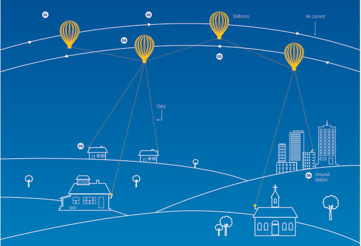

Futuro
¿Qué tecnologías se esperan para el futuro? Según IBM Research:
- Con la Inteligencia Artificial, nuestras palabras serán una ventana hacia nuestra salud mental.
- La hiper-imagen y la Inteligencia Artificial nos darán visión de superhéroes.
- Los macroscopios nos ayudarán a entender la complejidad de la Tierra en detalle infinito.
- Los laboratorios médicos "on a chip" servirán como detectives de la salud para rastrear enfermedades a nanoescala.
- Los sensores inteligentes detectarán la contaminiación medioambiental a la velocidad de la luz.

Aparte de lo mencionado por IBM Research, se esperan grandes avances en la realidad aumentada, inteligencia artificial, computación cuántica, entre otros. También hay otros poryectos en desarrollo de Google como son: Project Loon(Internet en un balón), Project Tango(Hacer mapas en 3D), Project ARA(Teléfonos modulares), Vehículos autónomos y robots para el ejercito.